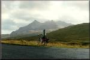

The Highlands
The Highlands Tour continues to be our most popular tour. This two-week excursion takes you to some of the most awe-inspiring scenery in Scotland; yet provides plenty of shopping time and sight-seeing in the beautiful city of Edinburgh.
The trip begins with two days in Glencoe, the site of the famous massacre of the MacDonald clan by the Stewarts. Take some time to go hiking. Several movies have been filmed in Glencoe, including Braveheart and Highlander. Maybe you'll get a chance to be an extra in this year's production!
From Glencoe, the tour travels north, following the trail of Bonnie Prince Charlie to Glenfinnan. You'll also take a boat trip to view castle ruins along the Kyle of Lochalsh. A trip to Loch Ness follows. Perhaps you'll see Nessie!
For city-dwellers, you'll enjoy the next three days in Edinburgh. Do some shopping along the Royal Mile, or climb Arthur's Seat for a awesome view of the city. If you love castles, visit Edinburgh castle and Sterling castle too.
The tour concludes with a trip to Glasgow.